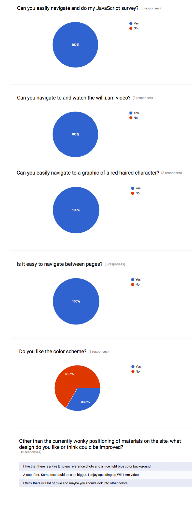

My three tasks revolved around how easily they could navigate between pages on the site. I also asked for opinions on the blue color scheme.
Most people had little to no difficulty finding all the pages on the site. The questions were simple, but a few could have been tricky.
I learned mostly that the simple nature of the site is a positive, as it's very easy to navigate in its current incomplete state. I plan to make changes to the color scheme as it generally has been recieved negatively.
